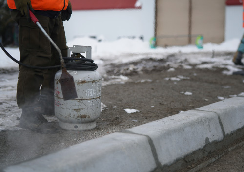
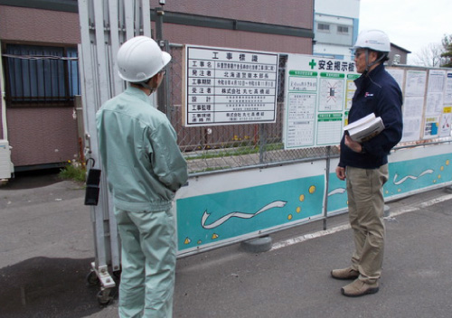
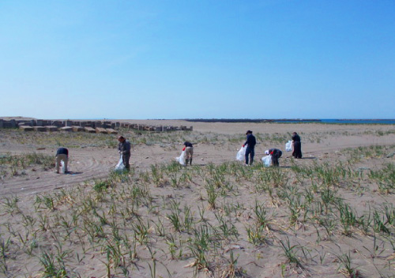
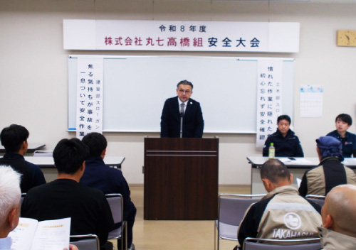
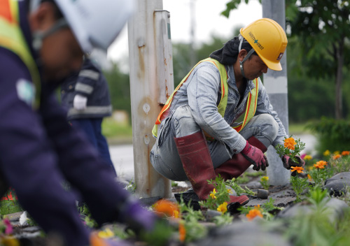
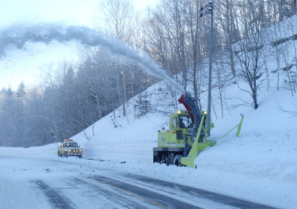

COMPANY
会社案内ゼネラルコントラクターとして
地域発展に貢献を
ともに歩み続ける大自然
丸七高橋組は世界自然遺産である斜里・知床の
雄大な自然とともに歩んできました。
私たちに多くの恵みを与えてくれるこの自然環境や動植物と
調和した事業を常に心がけています。
ともに積み上げ、ともにつくる未来
海や山の恵みに囲まれ、穏やかな暮らしが息づく斜里町で、
仲間とともに経験を重ね、どこまでも成長していく。
一つひとつの仕事を積み上げながら、チームを強くし、
地域に必要とされる会社をつくっていく。
丸七高橋組は、このまちのこれからを、ともにつくる会社です。
CSR
社会貢献活動
インフラの維持
道路や河川の維持管理を通じ、地域の安全と安心な暮らしを支えるまちづくりに貢献します。

現場体験ができるインターンシップ
斜里町や北見の生徒が現場就業体験を通じ、建設業への理解と地域の未来を考える機会に。

前浜清掃などのボランティア活動
海岸等の清掃活動を通じ、地域の自然環境を守り、次世代へ豊かな自然をつなぎます。

安全大会の実施
安全大会を通じて事故防止と安全意識を高め、安心して働ける環境づくりにも取り組みます。

植栽などの地域の景観づくり
国道沿いの花壇整備を通じ、季節の彩りを届け、地域に親しまれる環境を明るくつくります。

通行環境を守る取り組み
冬の除雪や夏の除草で道路環境を安全に保ち、地域の日々の暮らしと交通を支え続けます。
CORPORATE PROFILE
会社概要| 会社名 | 株式会社 丸七高橋組 |
|---|---|
| 代表取締役 | 高橋 一成 |
| 創業 | 昭和33（1958）年5月 |
| 設立 | 昭和43（1968）年4月 |
| 資本金 | 3,300 万円 |
| 所在地 |
□本社 〒099-4115 北海道斜里郡斜里町光陽町16番地8 TEL.0152-23-2441（代表） FAX.0152-23-3052（総務部） FAX.0152-23-3770（土木部・建築部） □北見営業所 〒090-0834 北海道北見市とん田西町218番地13号 1F TEL&FAX: 0157-57-1533 |
| 登録 |
北海道知事許可（特-4）オ 第437号 土木工事業、建築工事業、舗装工事業、解体工事業 北海道知事許可（般-4）オ 第437号 大工工事業、とび・土工工事業、水道施設工事業 二級建築士事務所／北海道知事登録（オホ）第740号 宅地建物取引業免許／北海道知事 オホ（4）第371号 （公社）北海道宅地建物取引業協会会員 （公社）全国宅地建物取引業保証協会会員 （株）日本住宅保証検査機構／登録 A1000594 ISO9001：2015認証取得（本社）、ISO14001：2015認証取得（本社） |
| 事業内容 |
建設業、宅地建物取引業、建築の設計および工事監理、 前各号に附帯する一切の業務 |
| 営業エリア |
北見市、網走市、紋別市、美幌町、大空町、遠軽町、斜里町、清里町、 小清水町、訓子府町、置戸町、津別町、佐呂間町、湧別町、上湧別町、 興部町、雄武町、滝上町、等 |
| 主要取引金融機関 | 網走信用金庫 斜里支店、北洋銀行 斜里支店、北海道銀行 斜里支店 |
HISTORY
沿革| 1958（昭和33）年 5月 | 丸七高橋組、創業 |
|---|---|
| 1968（昭和43）年 4月 | 組織変更 （株）丸七高橋組 設立 資本金300万円 |
| 1968（昭和43）年 4月 | 代表取締役 高橋七郎 |
| 1968（昭和43）年 4月 | 知事登録（ヨ）網第1161号 |
| 1973（昭和48）年 9月 | 増資 資本金900万円 |
| 1976（昭和51）年 10月 | 建設業許可 一般〜特定 |
| 1977（昭和52）年 1月 | 増資 資本金1,300万円 |
| 1979（昭和54）年 3月 | 土木事業 許可 |
| 1981（昭和56）年 3月 | 水道施設工事業 許可 |
| 1983（昭和58）年 5月 | 増資 資本金3,300万円 |
| 1988（昭和63）年 4月 | 建設業許可 土木工事業・建築工事業 特定建設業許可1本化 許可番号-北海道知事（特・般）網第437号 |
| 1990（平成2）年 6月 | 高橋七郎辞任 高橋太志・高橋勝人就任 |
| 1990（平成2）年 12月 | 斜里町本町4番地〜斜里町本町21番地12 |
| 1991（平成3）年 8月 | 斜里町本町21番地12〜斜里町光陽町16番地8 |
| 2008（平成20）年 1月 | 高橋勝人（専務）退任 |
| 2010（平成22）年 5月 | 高橋一成（副社長）就任 |
| 2011（平成23）年 6月 | 高橋太志（代表取締役会長）就任・高橋一成（代表取締役社長）就任 |
| 2021（令和3）年 5月 | 高橋太志辞任・高橋一成（代表取締役社長） |
ACCESS
アクセス□本社
〒099-4115
北海道斜里郡斜里町光陽町16番地8
TEL: 0152-23-2441（代表）
FAX: 0152-23-3052
□北見営業所
〒090-0834
北海道北見市とん田西町218-13
TEL/FAX: 0157-57-1533